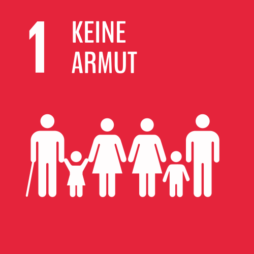

Ca. 11 % der Weltbevölkerung lebt in extremer Armut. Im Jahr 2015 waren es etwa 836 Millionen Menschen. Sie mussten mit weniger als 1,25 US-Dollar pro Tag auskommen. Die Weltgemeinschaft hat es sich zum Ziel gesetzt, die extreme Armut bis 2030 komplett zu beenden.
„Armut ist nicht natürlich, sie wurde von den Menschen geschaffen und kann deshalb überwunden, sowie durch geeignete Maßnahmen ausgerottet werden. Die Beseitigung der Armut ist kein Akt der Barmherzigkeit, sondern der Gerechtigkeit.“
(Nelson Mandela, Friedensnobelpreisträger)
